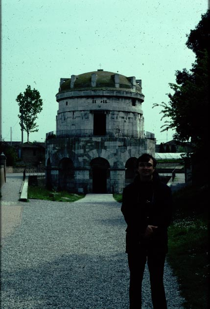

View of the mausoleum of Theodoric. The roof is made of a
single
huge piece of stone.

The porphyry bathtub, perhaps the sarcophagus of Theodoric.
Before his death in 526, Theodoric built this stone mausoleum for
himself,
just outside the city walls overlooking the sea. In the ninth
century,
it was thought that he had been buried in the vessel that you see
below.
Actually, it is an imperial bathtub made of porphyry, a rare
reddish-purple
stone, but it might have been used by Theodoric for a sarcophagus.

View of the mausoleum of Theodoric. The roof is made of a
single
huge piece of stone.
The porphyry bathtub, perhaps the sarcophagus of Theodoric.